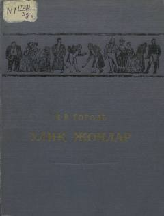

OJXIX asr Rossiya jamiyatini fosh etuvchi o'lmas satirik roman.
Nikolay Gogolning ushbu mashhur romani XIX asr Rossiya jamiyatidagi illatlarni o'tkir satira orqali ochib beradi. Asar bosh qahramoni Chichikovning o'lik jonlarni sotib olish bo'yicha g'ayritabiiy sarguzashtlari orqali o'sha davr feodal tuzumi va insoniy xislatlar tahlil qilinadi.